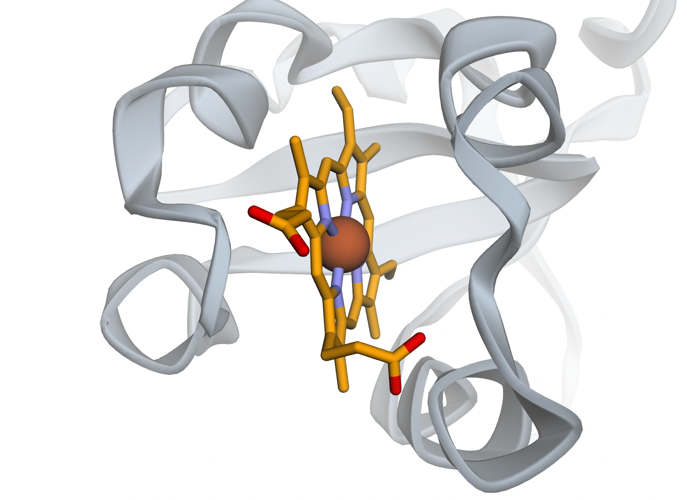

Metal–protein complex curation for AtomFlow
Prepared seven metal-containing protein complexes for the Crick Data Challenge team’s AtomFlow project.


Preparing the seven complexes
For each complex, I started with the atomic coordinates in the Protein Data Bank. I matched each ligand to its Chemical Component Dictionary entry and recorded which atoms coordinated the metal. In the haem structure shown above, this meant keeping track of both the cofactor and its central iron atom.
Correcting ligand charges
A structure can look right on screen even when a ligand carries the wrong charge in the file. I checked the charge annotations against the dictionary and corrected the errors while keeping the deposited coordinates intact. I then ran the preparation twice and compared the outputs. Both runs produced identical structure files for all seven complexes.